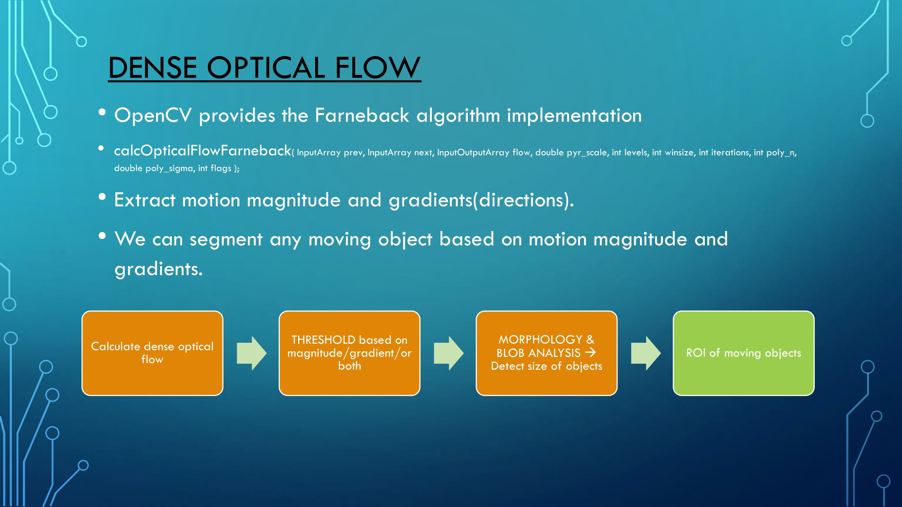
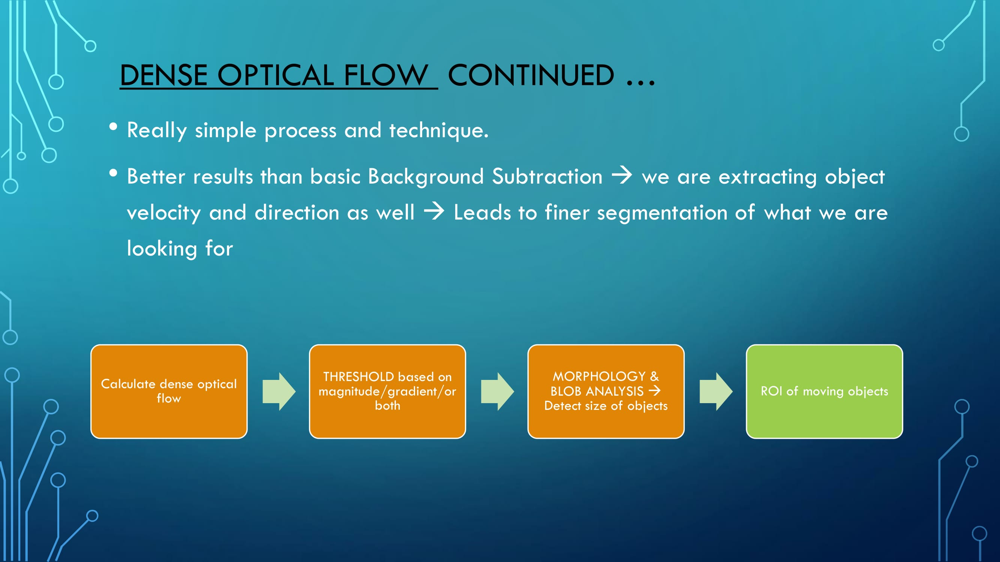
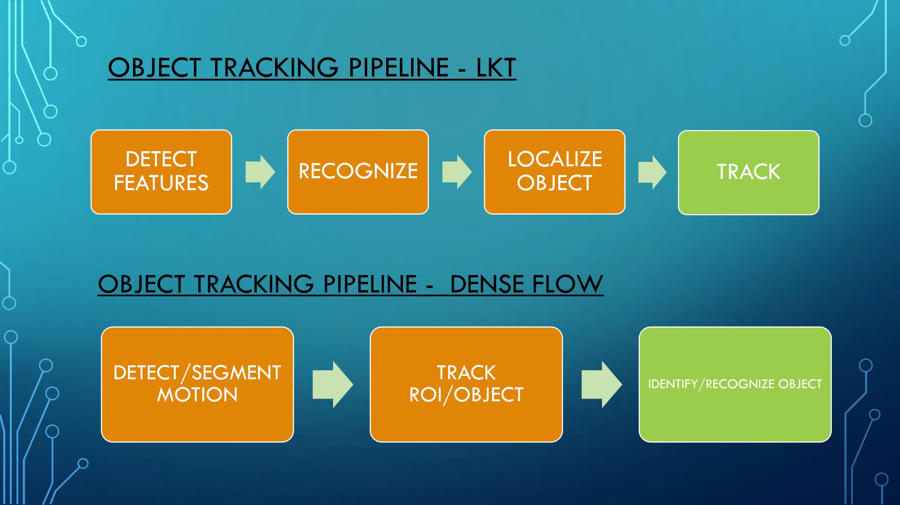
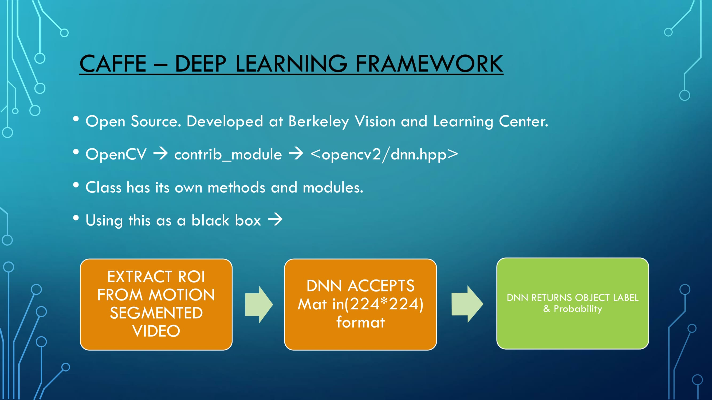
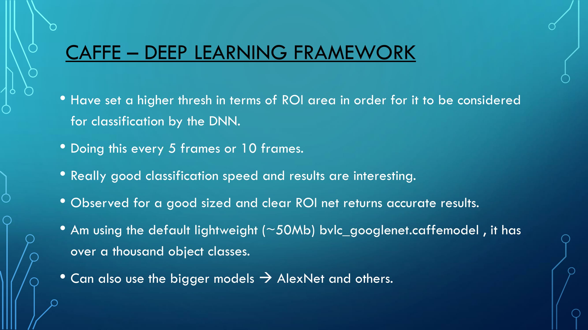

Dense Optical Flow

Object Tracking Pipelines (Sparse & Dense Optical Flow)

Object Classification using the Caffe Deep Learning Framework

Demo
Authors and Contributors
Github - Bassam Arshad (@bassamarshad) 2016
Support or Contact
Having trouble with Pages? Check out our documentation or contact support and we’ll help you sort it out.